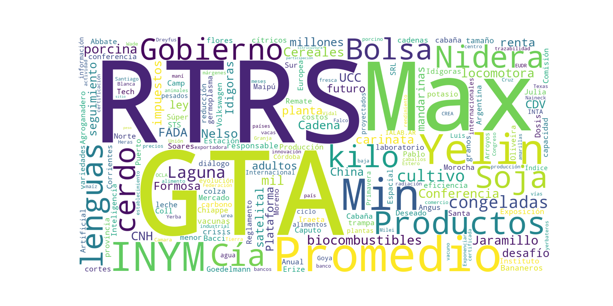

AgroScope
Resumen Ejecutivo - 2026-03-04
Lectura ejecutiva de cobertura agro y señales actorales del día.
Clave del día
Cruces temáticos: agricultura, ganaderia-carne, empresas y politica-regulaciones
Síntesis: El Mercado Agroganadero de Cañuelas registró firmeza en sus dos jornadas semanales con 13.505 cabezas comercializadas, alcanzando máximos de $5.950 en invernada y $4.950 en novillos pesados. La escasez de hacienda y los precios récord amenazan con quebrar la cadena de pagos entre matarifes y carnicerías, según alertaron desde el sector en Santa Fe. La Justicia de Rosario decretó la quiebra de Bioceres S.A. por un pasivo de 158 millones de dólares tras no cumplir con los compromisos asumidos con acreedores. La empresa biotecnológica, conocida por desarrollar tecnología HB4 para tolerancia a sequía, no pudo sostener su estructura financiera. El conflicto en Medio Oriente impactó en el mercado de fertilizantes con una suba del 20% en la urea, que aumentó 46 dólares por tonelada FOB regional. La guerra también frenó exportaciones yerbateras a Siria, mientras el transporte de carga teme el impacto en el costo del gasoil. Un estudio de FADA reveló que Argentina podría expandir el riego de 2,1 a 7,5 millones de hectáreas, generando 27.000 empleos y casi 1.000 millones de dólares extra en exportaciones. El nuevo Régimen de Incentivo a la Mediana Inversión (RIMI) complementa al RIGI con beneficios para PyMEs agroindustriales desde inversiones de 150.000 dólares. Michelin presentará en Expoagro 2025 su tecnología Ultraflex para cuidado del suelo y servicios que reducen 60% el costo de neumáticos nuevos. La muestra, del 10 al 13 de marzo en San Nicolás, contará con 600 metros cuadrados de exhibición. La Bolsa de Cereales de Entre Ríos detectó presencia de chicharrita del maíz en el último relevamiento nacional de Dalbulus maidis. El vector del achaparramiento mantiene alerta a productores ante el inicio de siembras tempranas. El sector arrocero enfrenta una campaña desafiante con menor área sembrada y precios internacionales a la baja. Brasil absorbe gran parte de la producción mientras los costos locales continúan en ascenso
Top 5 noticias del día
Ranking multicapa: cobertura entre medios + relevancia semántica + señales de tensión/riesgo.
Clima discursivo
¿Que significa esto?
Muestra la polaridad general del discurso del dia. El porcentaje indica cuantas oraciones tienen tono negativo. Los actores se clasifican como protagonista (ratio agencia alto: ejecuta acciones), afectado (ratio bajo: recibe acciones) o dual (aparece en ambos roles).
{'seccion': 'Polaridad negativa baja (18.6%), tono asertivo, actores argentinos protagonistas (ratio agencia 0.31).'}
Riesgo y oportunidad
Señales detectadas en las notas del día mediante análisis multicapa (SFL + semántico + heurístico).
Plagas / Control sanitario
Temas del día
Agrupamiento automático de las notas del día. Ordenados por relevancia multicapa (cobertura + diversidad de medios + conectividad).
Topico crítico (plagas/control sanitario): La chicharrita gana terreno y refuerzan el llamado a vigilar los lotes.
Topico crítico emergente (consumo): Financiamiento atado al kilo capón: casi $14.000 millones para apuntalar al sector porcino.
Santa Fe, Carne, Inglés (4 notas3 medios)
Medios: agroclave, agrofy, noticiasagropecuarias
También: hacienda, modalidad, robo enciende, traslado
La Argentina, Fada, Riego (3 notas3 medios)
Medios: agrofy, bichos, lanacion
También: hectáreas, millones, empleos, casi
- Argentina podría tener riego en 7,5 millones de hectáreas: se generarían 2 empleos cada 100 nuevas hectáreas y casi US$
- Oda al riego: Un estudio de FADA estima que si se agregaran 7,5 millones de hectáreas bajo riego, se podrían generar 27
- Impacto: si la Argentina regara más las exportaciones podrían crecer en casi US$1000 millones y se crearían nuevos 27.00
Michelin, Expoagro, Neumáticos (4 notas4 medios)
Medios: agritotal, agrofy, agrosito, lanacion
También: sustentable, movilidad, movilidad sustentable, mejorar desempeño
Unl, Rindes, Ganadería (4 notas4 medios)
Medios: agritotal, agrofy, agrosito, noticiasagropecuarias
También: sumó, oportunidades, oportunidades inversiones, unl impulsan
Menos, Arroz, Cosecha (2 notas2 medios)
Medios: agrosito, bichos
También: radiografía campaña, limita, suba soja, sembrada
Valentín Rebottaro, Cámara De Industriales Molineros, Trigo (3 notas3 medios)
Medios: agrosito, bichos, todoagro
También: tecnología, recomendaciones elección, potencial explorar, materiales campaña
Córdoba, Qué, Guías (2 notas2 medios)
Medios: agritotal, bichos
También: proyecto, norma, seguir, tránsito pecuario
Universidad, Cannabis, Salud (1 notas)
También: comahue, sanitario, preparan, preparan maestría
Mercado Agroganadero, Tabaré Bassi, Hilton (3 notas2 medios)
Medios: bichos, lanacion
También: agroganadero cañuelas, cañuelas, televisado novillos
- Debido a un combo letal, la actividad ovina de la Patagonia está en crisis: “Los campos se están despoblando”, dice Taba
- Ocho consignatarios hicieron el primer remate televisado con novillos y vacas para la exportación desde el Mercado Agrog
- Vacunos: escasa oferta y subas en el Mercado Agroganadero de Cañuelas
Indec, La Argentina, Complejo (1 notas)
También: mapa exportador, sale soja, mapa, uno
Riego, Soja, Usd (2 notas2 medios)
Medios: agroclave, agrosito
También: clima, sequía, productiva rol, sequía estabilidad
Siria, Kassab, Yerba (1 notas)
También: yerbatera andresito, yerbatera, siria estamos, kassab dueño
La Guerra, Urea, Dólares (1 notas)
También: pausa, mercado pausa, mercado
Fórmula, Rosario, Bariloche (2 notas)
También: lúpulo, llegó mba, lúpulo productos, multinacional
Agrale, Expoagro, Inglés (2 notas)
También: lanza camión, retorno, lanza, ruta
Ejes centrales
Consultas temáticas predefinidas: las señales clave del día agrupadas por eje.
Clima
Exportación
- Las ventas lácteas recuperan terreno: los volúmenes de enero crecieron un 31,8% interanual
- Argentina podría tener riego en 7,5 millones de hectáreas: se generarían 2 empleos cada 100 nuevas hectáreas y casi US$ 1000 en exportaciones
- KIRA INTA: el Arroz que conquista los mercados prémium del mundo
- Uno de cada cuatro dólares que exporta la Argentina sale de la soja: Según INDEC, el agro volvió a dominar el mapa exportador
- Ocho consignatarios hicieron el primer remate televisado con novillos y vacas para la exportación desde el Mercado Agroganadero de Cañuelas
- Por la guerra en Medio Oriente, una yerbatera de Andresito vio frenada su exportación a Siria: “Estamos muy preocupados”, dice Omar Kassab, dueño de Hoja Verde
- Impacto: si la Argentina regara más las exportaciones podrían crecer en casi US$1000 millones y se crearían nuevos 27.000 empleos
- La guerra ya golpea a los fertilizantes: la urea subió hasta un 20% y el mercado quedó en pausa
Cosecha
- El aprovechamiento del estiércol mejora hasta un 26 % los rindes de los cultivos
- Trigo: recomendaciones para la elección de materiales para la próxima campaña
- Luces y sombras en los fertilizantes: el consumo continúa en alza, pero las dosis siguen siendo bajas
- El uso de estiércol puede elevar hasta 26% los rindes de maíz y soja
Agenda del día
Ranking triangulado: clusters semánticos + fuerza semántica FAISS + visibilidad editorial. Cada tema muestra cuántas capas de análisis lo refuerzan.
Temas del día (ranking triangulado)
Este ranking es una triangulación visual. La clave del día se genera con un ranking propio optimizado para LLM.
Queries por score semántico
Fuerza semántica: ¿qué tan presente está cada concepto en el corpus? (similaridad coseno FAISS)
Configurada Emergente
Queries por visibilidad editorial
Visibilidad editorial: ¿qué conceptos aparecen literalmente en títulos y subtítulos? (presencia léxica directa)
Configurada Emergente
Cómo representan los medios cada tema
Flujo temático: cada tema → qué medios lo cubren → con qué tono editorial
Sobre qué hablan los medios
Resumen por medio: temas principales y titulares destacados.
Agritotal presenta hoy una cobertura equilibrada entre tecnología agrícola, ganadería y regulaciones. Prioriza las innovaciones tecnológicas para mejorar la productividad, destacando las soluciones para el estrés abiótico y las novedades de Expoagro en tracción sustentable. En ganadería, reporta la actividad del MAG y la recuperación láctea con datos concretos. También aborda regulaciones como el proyecto cordobés sobre tránsito pecuario. Su enfoque combina análisis técnico con información de mercado, sin que ningún actor específico domine la cobertura.
Agroclave presenta una cobertura dual enfocada en dos sectores críticos del agro argentino. En ganadería, analiza la tensión del mercado cárnico entre el crecimiento y posibles riesgos de sobrecalentamiento. En agricultura, prioriza el factor climático como determinante de la campaña gruesa, destacando marzo como mes decisivo para los rendimientos de soja y maíz. Su enfoque combina análisis de mercado con perspectiva técnica-productiva, priorizando los aspectos económicos y climáticos que impactan directamente en la rentabilidad sectorial.
Agrofy presenta una cobertura diversificada que combina noticias empresariales, innovación tecnológica y problemáticas sectoriales. Destaca por su enfoque en historias de emprendedurismo y casos de éxito, como el MBA rosarino y el emprendimiento cervecero en Bariloche. Prioriza temas de inversión, tecnología agrícola y análisis de mercado, con especial atención a Expoagro 2026 como vitrina de innovaciones. Su cobertura diferenciadora incluye análisis económicos profundos y perfiles empresariales, manteniendo equilibrio entre información técnica y casos inspiradores del sector.
Agrositio presenta hoy una cobertura equilibrada entre aspectos técnico-productivos y comerciales del sector agropecuario. El medio prioriza información práctica para productores, abordando desde recomendaciones climáticas y de riego hasta mejoras genéticas en arroz y ganadería. Destaca por su enfoque en innovación tecnológica, con especial atención a desarrollos del INTA que aparece como actor dominante en más de la mitad de las notas. La cobertura incluye análisis de mercados (dólar-soja) y eventos sectoriales como Expoagro, manteniendo un tono informativo centrado en soluciones productivas y oportunidades de mejora para el campo argentino.
Agroverdad enfoca su cobertura en herramientas prácticas para el sector, priorizando información de gestión empresarial y mercados ganaderos. Dedica atención especial al nuevo RIMI como oportunidad de inversión para PyMEs agroindustriales, presentándolo desde una perspectiva de beneficios concretos. Complementa con datos precisos de precios ganaderos de Cañuelas y Rosario, manteniendo un enfoque informativo directo. Su cobertura combina análisis regulatorio con información de mercado cotidiana, dirigiéndose a productores que buscan decisiones comerciales fundamentadas.
Bichos de Campo presenta una cobertura diversificada del agro argentino con enfoque analítico y de coyuntura. Prioriza temas estructurales como riego, tecnología y crisis sectoriales, destacando estudios de FADA sobre infraestructura hídrica y análisis de mercados específicos como arroz y ovinos patagónicos. El medio muestra una perspectiva crítica sobre regulaciones y trabas burocráticas, evidenciada en notas sobre peajes ganaderos y normativas del INYM. Argentina como país exportador domina la narrativa, posicionándose como actor central en la mayoría de las coberturas del día.
Infobae concentra su cobertura agropecuaria en dos ejes estratégicos: el apoyo financiero al sector porcino con un programa de $14.000 millones vinculado al precio del capón, y la expansión de la chicharrita como amenaza fitosanitaria que requiere monitoreo intensivo de lotes. El medio prioriza el impacto económico de las políticas sectoriales y los riesgos productivos emergentes, presentando los temas desde una perspectiva de gestión de crisis y oportunidades de financiamiento para productores.
Infocampo prioriza el manejo técnico y la planificación agrícola con un enfoque preventivo y estratégico. Aborda tres pilares fundamentales: control anticipado de malezas, regulaciones fitosanitarias en Entre Ríos y análisis del mercado de fertilizantes. El medio presenta los temas desde una perspectiva práctica para productores, enfatizando la importancia de la planificación temprana y el análisis de tendencias de consumo. Su cobertura se distingue por combinar aspectos técnicos agronómicos con análisis regulatorios y de mercado, ofreciendo una visión integral del sector.
La Nación presenta una cobertura técnica y económica del sector agropecuario, priorizando el impacto de factores externos en la productividad nacional. Destaca especialmente el potencial del riego para incrementar exportaciones en US$1000 millones, mientras aborda problemáticas urgentes como el encarecimiento de fertilizantes por la guerra y la escasa oferta ganadera. Su enfoque combina innovación tecnológica con análisis macroeconómico, posicionando a Argentina como actor central en sus narrativas sobre oportunidades y desafíos sectoriales.
Noticiasagropecuarias presenta una cobertura diversificada que abarca innovación tecnológica, crisis empresariales y financiamiento sectorial. Prioriza desarrollos científicos locales como la investigación forrajera CONICET-UNL y estudios sobre fertilización orgánica. Destaca por cubrir tanto aspectos positivos (créditos porcinos del BICE) como negativos (quiebra de Bioceres, cierre frigorífico). Su enfoque equilibra noticias técnico-productivas con información empresarial y judicial, sin que ningún actor específico domine la agenda, manteniendo una perspectiva integral del agro argentino.
TodoAgro presenta hoy una cobertura diversificada que abarca desde instituciones rurales hasta innovación tecnológica. Prioriza temas de desarrollo sectorial como la agenda 2026 de la Sociedad Rural santafesina, el crecimiento del consumo de fertilizantes y el potencial del sorgo como cultivo alternativo. Destaca la perspectiva de género en el agro y conecta factores externos como el conflicto en Medio Oriente con la logística local. La marca IVECO domina significativamente la cobertura como actor principal, reflejando el enfoque del medio en maquinaria e innovación industrial agropecuaria.
Mapa de cobertura temática
Qué medio cubre qué tema. Filas = medios, columnas = clusters temáticos ordenados por relevancia.
| Medio | Santa Fe, carne | La Argentina, Fada | Michelin, Expoagro | Unl, rindes | Menos, arroz | Valentín Rebottaro, Cámara de Industriales Molineros | Córdoba, Qué | Universidad, cannabis | Mercado Agroganadero, Tabaré Bassi | Indec, La Argentina | Riego, soja | Siria, Kassab |
|---|---|---|---|---|---|---|---|---|---|---|---|---|
| Bichos de Campo (8) | ||||||||||||
| Agrosito (5) | ||||||||||||
| Agrofy News (4) | ||||||||||||
| La Nación Campo (3) | ||||||||||||
| Agritotal (3) | ||||||||||||
| Agroclave (2) | ||||||||||||
| Noticias Agropecuarias (2) | ||||||||||||
| Todo Agro (1) |
Distribución por sección analítica
Cada celda muestra cuántas notas publicó cada medio en cada sección analítica. Color más oscuro = más notas.
Declaraciones clave
Citas extraídas de verbos declarativos en las notas del día.
Ponsone (señalar): “Hay más profesionales mujeres, más empoderadas y seguras del trabajo que hacen”
— todoagro · La revolución silenciosa de las mujeres en el campo
Noble (subrayar): “La digitalización y la tecnología ayudan a que las mujeres estén en igualdad de condiciones y tengan más oportunidades para desarrollarse en el ámbito agropecuario”
— todoagro · La revolución silenciosa de las mujeres en el campo
Medina (destacar): “Cuando una misma persona lleva producción y administración, tener información ordenada y accesible simplifica todo”
— todoagro · La revolución silenciosa de las mujeres en el campo
Bunge (destacar): “Es habitual que, al finalizar, den un salto profesional”
— agrofy · El "Fórmula 1" del agro: lo crearon hace 20 años en Rosario y llegó a ser el seg
el flamante Director que reemplaza al Dr. Carlos Steiger (indicar): “Estoy heredando un producto que para mi es un Fórmula 1 de los mejores”
— agrofy · El "Fórmula 1" del agro: lo crearon hace 20 años en Rosario y llegó a ser el seg
Ponsone (señalar): “Creo que aportamos organización, apertura a nuevas formas de trabajar, escucha y bienestar animal”
— todoagro · La revolución silenciosa de las mujeres en el campo
Causa → Efecto
Relaciones causales detectadas en las notas del día.
Actores dominantes
Palabras destacadas

Notas por área
Todas las notas del día agrupadas por tema y medio
Título clickeable, medio normalizadoAgritotal
- El rol de las tecnologías para cerrar la brecha productiva en la Argentina Mercado Agroganadero, Tabaré Bassi
- Estrés abiótico: el común denominador de la brecha productiva Medio Oriente, Qué
- Hacia una movilidad sustentable: las innovaciones en tracción y cuidado del suelo que llegan a Expoagro Mercado Agroganadero, Tabaré Bassi
Agroclave
Agrofy News
- Argentina podría tener riego en 7,5 millones de hectáreas: se generarían 2 empleos cada 100 nuevas hectáreas y casi US$ 1000 en exportaciones fertilizantes, trigo
- Con mejor clima, el productor invirtió más en nutrientes y empujó el mercado fertilizantes, trigo
- Aplicaron un modelo de negocio único a la maquinaria y no paran de crecer: cómo pasaron de ser un proveedor local a convertirse en una red federal de concesionarios Menos, arroz
Agrosito
- De la sequía a la estabilidad productiva: el rol del Riego fertilizantes, trigo
- El aprovechamiento del estiércol mejora hasta un 26 % los rindes de los cultivos Santa Fe, carne
- El dólar en máximos de enero: El contrapeso que limita la suba de la soja Medio Oriente, Qué
- Trigo: recomendaciones para la elección de materiales para la próxima campaña Santa Fe, carne
- Michelin lleva a Expoagro 2026 su portafolio y refuerza su apuesta por la movilidad sustentable en el campo Menos, arroz
Agroverdad
- Precios de la hacienda en Cañuelas y Pizarra de Rosario de hoy miércoles Michelin, Expoagro
Bichos de Campo
- El INTA y la Universidad del Comahue preparan una maestría en cannabis con foco productivo y sanitario Santa Fe, carne
- Oda al riego: Un estudio de FADA estima que si se agregaran 7,5 millones de hectáreas bajo riego, se podrían generar 27 mil puestos de trabajo fertilizantes, trigo
- Radiografía de una campaña arrocera desafiante: Menos área sembrada, precios internacionales a la baja y costos en subida suelo, maíz soja
- ¿Y ahora qué hacemos con tanto trigo? Para Valentín Rebottaro, presidente de la Cámara de Industriales Molineros, es hora de discutir la inversión en tecnología para mejorar la calidad Santa Fe, carne
Infocampo
- Contra las malezas, anticiparse y planificar desde el minuto cero: “No hay que apagar incendios” Medio Oriente, Qué
- Luces y sombras en los fertilizantes: el consumo continúa en alza, pero las dosis siguen siendo bajas fertilizantes, trigo
La Nación Campo
- Cultivos: lanzaron un adyuvante siliconado para mejorar el desempeño de las aplicaciones Mercado Agroganadero, Tabaré Bassi
- Impacto: si la Argentina regara más las exportaciones podrían crecer en casi US$1000 millones y se crearían nuevos 27.000 empleos fertilizantes, trigo
Noticias Agropecuarias
Todo Agro
- La Sociedad Rural de Santa Fe puso en marcha su agenda 2026 Sociedad Rural, Cañuelas
- Sorgo: diversificación estratégica con potencial por explorar Santa Fe, carne
Agritotal
- El MAG sumó más de 13.500 cabezas en dos jornadas y mostró firmeza en varias categorías Michelin, Expoagro
Agroclave
- Entre el boom del sector ganadero o el estallido Michelin, Expoagro
Agrofy News
- Inseguridad rural: una nueva modalidad de robo enciende las alarmas entre los productores de Santa Fe Sociedad Rural, Cañuelas
- Los detalles del nuevo régimen que abre oportunidades para inversiones agroindustriales desde US$ 150.000 Menos, arroz
- Matarifes y carnicerías en alerta: la escasez de hacienda y los altos precios amenaza con quebrar la cadena de pagos Michelin, Expoagro
Agrosito
- Ganadería ConCiencia: un aporte para una producción más eficiente Santa Fe, carne
- Una alianza estratégica para impulsar la mejora genética de la raza Limangus Santa Fe, carne
Bichos de Campo
- Debido a un combo letal, la actividad ovina de la Patagonia está en crisis: “Los campos se están despoblando”, dice Tabaré Bassi, secretario ganadero de Río Negro Sociedad Rural, Cañuelas
- Ocho consignatarios hicieron el primer remate televisado con novillos y vacas para la exportación desde el Mercado Agroganadero de Cañuelas Michelin, Expoagro
- ¡Qué las vacas dejen de pagar peaje! Proponen en Córdoba aprobar una norma que impida a los municipios seguir cobrando guías de hacienda Sociedad Rural, Cañuelas
Infobae Campo
- Financiamiento atado al kilo capón: casi $14.000 millones para apuntalar al sector porcino Michelin, Expoagro
La Nación Campo
- Vacunos: escasa oferta y subas en el Mercado Agroganadero de Cañuelas Michelin, Expoagro
Noticias Agropecuarias
- CONICET-UNL impulsan la innovación forrajera Santa Fe, carne
- Cerró el frigorífico Ganadera San Roque de Morón Sociedad Rural, Cañuelas
- Disminuyó en febrero el traslado de hacienda a faena Michelin, Expoagro
Todo Agro
- La revolución silenciosa de las mujeres en el campo Menos, arroz
Noticias Agropecuarias
Agritotal
- Las ventas lácteas recuperan terreno: los volúmenes de enero crecieron un 31,8% interanual Medio Oriente, Qué
Bichos de Campo
Agrofy News
- El transporte de carga tiene una reactivación “limitada”, pero teme que el conflicto en Medio Oriente golpee en el costo del gasoil suelo, maíz soja
- La Justicia decretó la quiebra de Bioceres Sociedad Rural, Cañuelas
Agroverdad
- Inversiones. Cuáles son los beneficios para las PyMEs agroindustriales a través del nuevo RIMI Mercado Agroganadero, Tabaré Bassi
Bichos de Campo
- Un INYM mareado: Luego de sumar cambios en el control de operadores (a los que les tendrá más tolerancia en caso de incumplimiento), reinstaló dos normas ya derogadas sobre registros Sociedad Rural, Cañuelas
Noticias Agropecuarias
- La justicia decretó la quiebra de Bioceres por un pasivo de 158 mill/dol Sociedad Rural, Cañuelas
Bichos de Campo
Agritotal
- Tránsito pecuario en Córdoba: un proyecto de ley apunta a eliminar cobros municipales Sociedad Rural, Cañuelas
Agrofy News
Agrosito
- KIRA INTA: el Arroz que conquista los mercados prémium del mundo Mercado Agroganadero, Tabaré Bassi
Todo Agro
Infobae Campo
Infocampo
- Fitosanitarios: Entre Ríos protagoniza un nuevo round en la disputa por su uso en zonas periurbanas Sociedad Rural, Cañuelas
Agrofy News
- Una de las estrellas de Expoagro 2026: los equipos que ganan protagonismo en el campo para dejar de depender del clima y el retorno económico de la inversión Mercado Agroganadero, Tabaré Bassi
Agrosito
La Nación Campo
- La guerra ya golpea a los fertilizantes: la urea subió hasta un 20% y el mercado quedó en pausa suelo, maíz soja
Todo Agro
- El consumo de fertilizantes creció 3% el último año fertilizantes, trigo
Agrofy News
- Del campo a la ruta: Agrale apuesta al GNV y lanza el nuevo camión 15000 en Expoagro 2026 Mercado Agroganadero, Tabaré Bassi
Agrosito
Todo Agro
Alerta Predictiva
Proyecciones basadas en 29 días de datos históricos. Cada indicador muestra si la tendencia reciente sube, baja o se mantiene, y estima la dirección en los próximos 7 días.
Sin alertas — todas las métricas dentro de rango esperado.
▼ Volumen de cobertura: en descenso (6% proyectado en 7 días)
▲ Profundidad del análisis: en aumento (+7% proyectado en 7 días)
▼ Ruido en detección de actores: en descenso (-63% proyectado en 7 días)
▲ Relaciones entre actores detectadas: en aumento (+20% proyectado en 7 días)
▬ Diversidad temática: estable
Conflictos y presiones del día
Hoy dominan las tensiones de tipo declarativa. Muestra qué actores ejercen presión sobre otros según los títulos del día. La barra indica la intensidad de la tensión.
Dinámica Actor-Afectado (SFL)
Análisis funcional de títulos: quién actúa y quién recibe la acción. Se detectaron 392 eventos con confianza media 0.898. El primer gráfico compara roles (quién actúa más vs quién es más afectado); el segundo muestra las relaciones más frecuentes.
Flujo actor → acción → afectado
Diagrama Sankey: los nodos azules son actores, los nodos marrones son acciones (verbos conjugados). El grosor del flujo indica la frecuencia de cada relación en los títulos del día.
Triadas narrativas
¿Que significa esto?
Cada triada muestra una relacion Actor → verbo → Afectado extraida de los titulos del dia. Solo se muestran relaciones con confianza superior al umbral calibrado. El verbo indica el tipo de accion: material (acciones fisicas), verbal (declaraciones), mental (percepciones) o relacional (atribuciones).
{'seccion': 'Procesos material y relacional dominantes, con escaso compromiso deontico.'}
Actor → acción → afectado. Color del verbo indica el proceso SFL. Frecuencia indica repeticiones en los títulos del día.
Relaciones entre actores
Lectura simplificada de impacto, medidas y actores dominantes del día.
Relaciones clave del día
Lectura narrativa: quién afecta a quién, qué medida empuja cambios y quién domina la agenda.
Quién afecta a quién hoy
- 🟡 ANTONELLA SEMADENI explica → GASTAR MAS AGUA SINO
- 🟢 JUSTICIA decreta → BIOCERES
- 🟡 CRIOLANI BAUER lleva → EXPOAGR 2026
- 🟡 RINDES DE MAIZ sube → BUENOS AIRES
- 🟡 SANTA FE busca → ALTERNATIVAS PRODUCTIVAS
Actores que dominan la agenda
- 🔵 ANTONELLA SEMADENI
- 🔵 JUSTICIA
- 🔵 REFERENTES INTERNACIONALES
- 🔵 CRIOLANI BAUER
- 🔵 RINDES DE MAIZ
Casos frontera (revisión técnica)
| actor_origen | actor_destino | clase_destino | tipo_vinculo | verbo_clave | score | frecuencia | confianza_media | nivel_confianza |
|---|---|---|---|---|---|---|---|---|
| RAFAEL | SE PUEDE COBRAR ENTRE | actor | declarativa | explicar | 0.7260 | 1 | 0.9020 | exploratoria |
| CANTO | PRIMEROS 40 A 45 DIAS | actor | declarativa | explicar | 0.7040 | 1 | 0.8740 | exploratoria |
| FEDERICO KOLLN | PLENA CRISIS DEL SECTOR FORESTAL | actor | comercial | explicar | 0.7040 | 1 | 0.8740 | exploratoria |
| RURAL DE BARILOCHE | MEDIO DE UNA CRISIS RECURRENTE | actor | declarativa | explicar | 0.7040 | 1 | 0.8740 | exploratoria |
| CADENA | AUXILIO | actor | declarativa | pedir | 0.6510 | 1 | 0.9300 | exploratoria |
| EJES DE TRABAJO | SOCIEDAD RURAL ARGENTINA | actor | declarativa | plantear | 0.6510 | 1 | 0.9300 | exploratoria |
Red interactiva de actores
¿Que significa esto?
Red multicapa de actores. Azul = relaciones extraidas del texto (co-ocurrencia). Rojo = relaciones de afectacion SFL (quien actua sobre quien). Naranja = tensiones/conflictos narrativos. El tamano del nodo refleja su centralidad en la red.
{'seccion': 'Red de actores con centralidad argentina, pero engagement heteroglosico predominante (64%).'}
Nodos = actores (tamano por score ponderado). Aristas = relaciones SFL (grosor por frecuencia). Arrastre y zoom habilitados.
Perfil de actores centrales
¿Que significa esto?
Fichas de los actores mas relevantes del dia. Ratio agencia: proporcion entre apariciones como ejecutor vs. receptor de acciones (>1 = mas protagonista, <1 = mas afectado). Los verbos muestran las acciones mas frecuentes en cada rol.
{'seccion': 'Argentina actúa (26% material, 24% relacional), con engagement heteroglosico (64%).'}
Top 10 actores del día según análisis ponderado. Muestra cómo cada medio trata a cada actor: qué hace, qué declara y cómo es catalogado.
Prepara, desarrolla y brinda soluciones agropecuarias. Menciona, alcanza y amplía su rol en el sector.
Medita, demostramos y comienza iniciativas tecnológicas.
Apunta, incorpora y amplía sus estrategias. Lanación y Todoagro lo posicionan como motor regional.
Teme, impulsa y logra acuerdos comerciales. Agrofy, Bichos y Todoagro lo destacan.
Busca, sigue y lanza proyectos. Agrofy, Agrosito y Agritotal lo cubren.
Refuerza, participa y explica estrategias de sostenibilidad. Agrosito y Agritotal lo destacan.
Conoce, crea y exhibe innovaciones. Agrofy lo menciona.
Asegura, presenta y genera soluciones. Bichos, Agrofy y Lanación lo cubren.
Dice, recuerda y habla de proyectos. Bichos, Agrofy y Agrosito lo destacan.
Complementa, crea y establece alianzas. Agrofy y Agroverdad lo mencionan.
Actores del día (ranking multi-señal)
¿Que significa esto?
Fichas de los actores mas relevantes del dia. Ratio agencia: proporcion entre apariciones como ejecutor vs. receptor de acciones (>1 = mas protagonista, <1 = mas afectado). Los verbos muestran las acciones mas frecuentes en cada rol.
Actores rankeados por 5 señales: frecuencia, perfil SFL, presencia cross-media, centralidad en red y presión narrativa.
Tono de cobertura
¿Que significan los tonos?
Tension: la seccion presenta posturas enfrentadas, contrastes fuertes entre actores o cifras. Indica debate o conflicto.
Retorica: la seccion usa preguntas o interpelaciones. Los medios no solo informan, sino que cuestionan o interpelan.
Descriptiva: la seccion enumera datos o hechos sin tomar posicion. Informacion factual.
Exploratoria: pocas notas en la seccion (menos de 3). La cobertura es incipiente y no se puede clasificar con confianza.
Neutral: cobertura equilibrada sin marcadores fuertes de tension, retorica ni descripcion.
Como los medios cubren cada seccion de la agenda: con tension (contrastes), retorica (preguntas), descripcion (enumeraciones) o de forma neutral.
2 usan preguntas o interpelaciones.
Actores en ascenso (7d)
MICHELIN ↑ como protagonista · INTA ↑ en rol dual
Persistencias de la semana
Señales que se repiten en la ventana de 7 días y ayudan a distinguir ruido del día frente a continuidad semanal.
Queries emergentes recurrentes
Tensión entre actores recurrente
Sesgo editorial
¿Que significa esto?
Detecta divergencias en como distintos medios encuadran al mismo actor o tema. Un puntaje alto indica que los medios presentan visiones opuestas (ej: un medio evalua positivamente, otro negativamente).
{'seccion': 'No hay divergencias evidentes entre medios en la encuadramiento de actores.'}
Actores enmarcados de forma divergente entre medios. Delta = diferencia en ratio de agencia (0=pasivo, 1=protagonista).
Voces en el discurso por medio
¿Que significa esto?
Engagement (Martin & White 2005): mide cuantas voces presenta el discurso. Monoglosico = el medio presenta hechos como verdad unica, sin citar fuentes. Heteroglosico = incluye otras voces: atribuciones ('segun...'), concesiones ('aunque...'), o probabilidad ('podria...'). Un medio con alto % heteroglosico tiende a citar fuentes y matizar; uno monoglosico tiende a afirmar sin atribucion.
Porcentaje de oraciones donde el medio cita fuentes (heteroglósico) vs. afirma sin atribución (monoglósico). Un medio con alta heteroglosia tiende a matizar; uno monoglósico presenta hechos como verdad única.
Postura editorial por medio
¿Que significa esto?
Distribucion de tipos de proceso SFL por medio. Material = acciones concretas. Verbal = declaraciones. Mental = percepciones/opiniones. Relacional = atribuciones/identidades. Un medio con mas procesos verbales tiende a reportar; uno con mas materiales tiende a narrar hechos.
{'seccion': 'Discurso asertivo predominante, con poca especulación (2%).'}
Distribución de procesos SFL por medio: hechos (material), declaraciones (verbal), catalogación (relacional).
Tono editorial por medio
Cómo cubre cada medio las noticias del día: patrones retóricos + procesos SFL dominantes.
| Medio | Notas | Contraste% | Proceso SFL | Tipo verbo | Lectura |
|---|---|---|---|---|---|
| agrofy | 13 | 84.6 | material | otro | cobertura informativa |
| agrosito | 10 | 70.0 | material | otro | cobertura informativa |
| bichos | 10 | 70.0 | relacional | otro | encuadre editorial fuerte |
| todoagro | 6 | 66.7 | material | otro | cobertura informativa |
| agritotal | 6 | 50.0 | material | otro | cobertura informativa |
| noticiasagropecuarias | 6 | 33.3 | material | otro | cobertura informativa |
| lanacion | 4 | 50.0 | material | otro | cobertura informativa |
| infocampo | 3 | 100.0 | material | otro | cobertura informativa |
| agroclave | 2 | 100.0 | material | otro | senal exploratoria |
| infobae | 2 | 50.0 | relacional | otro | senal exploratoria |
| agroverdad | 2 | 0.0 | material | otro | senal exploratoria |
Vocabulario distintivo por medio
Palabras que cada medio usa significativamente más que los demás (TF-IDF, distinctiveness ≥ 1.5).
Compromiso epistémico y tono evaluativo del día
Mapa del posicionamiento discursivo del periodismo agrario: qué porcentaje del discurso es asertivo (afirmaciones), especulativo (incertidumbre) o deóntico (obligaciones y mandatos), y qué tipo de evaluación predomina (emocional, moral o sobre las cosas).
Compromiso epistémico
Tono evaluativo (Appraisal SFL)
Engagement (voces en el discurso)
¿Que significa esto?
Engagement (Martin & White 2005): mide cuantas voces presenta el discurso. Monoglosico = el medio presenta hechos como verdad unica, sin citar fuentes. Heteroglosico = incluye otras voces: atribuciones ('segun...'), concesiones ('aunque...'), o probabilidad ('podria...'). Un medio con alto % heteroglosico tiende a citar fuentes y matizar; uno monoglosico tiende a afirmar sin atribucion.
Graduation: Force (intensidad)
¿Que significa esto?
Graduation: Force mide la intensidad del discurso. Amplificado = usa intensificadores (drasticamente, historico, record, critico). Atenuado = usa suavizadores (levemente, gradual, moderado, posible). Neutro = sin marcadores de intensidad. Un dia con alto % amplificado indica un discurso mas dramatico.
Temas de la semana
BERTopic (HDBSCAN/UMAP) sobre últimos 7 días
Tema 0 (55 notas)
Keywords: semillas, guerra, vacuna, ley, medio, medio oriente
- Arroz: radiografía del comercio y desafíos para el sector
- Milei fue al Congreso y aseguró que seguirá con la baja de retenciones “de forma responsable” mientr
- Opinión. Recupero del IVA de la exportación: una odisea para las pymes
Tema 1 (55 notas)
Keywords: expoagro, 2026, expoagro 2026, apuesta, genética, cañuelas
- En plena Puna jujeña, con mucho esfuerzo, la Comunidad Aborigen de Casti puso en funcionamiento una
- Bahiense y pionero: viajó a Europa y armó la primera cabaña Angus con 100% genética argentina del vi
- Así es el único manipulador telescópico de industria nacional: la empresa que apuesta fuerte en plen
Tema 2 (31 notas)
Keywords: millones, casi, 000, sector, 000 millones, casi 14
- Más de 10.000 incendios rurales por año y fuerte impacto económico en el agro
- En el campo, 1 de cada 4 viviendas está deshabitada y en algunas provincias más de la mitad no tiene
- Mes corto, feriados y paro nacional: La liquidación de las traders agrícolas se retrajo un 30% en fe
Tema 3 (22 notas)
Keywords: córdoba, 03, lluvias, aviar, clima, campaña
- Amplían la tolerancia al anegamiento de la alfalfa con mejoramiento genético
- Cómo reducir el riesgo de botulismo al consumir conservas vegetales, mixtas y escabeches
- Pino destacó la cosecha récord de trigo y volvió a reclamar la eliminación de retenciones
Tema 4 (17 notas)
Keywords: quiebra bioceres, bioceres, quiebra, hacemos, tanto, tanto trigo
- Corazón campero: La cadena solidaria de Saturnino y su hija, los voluntarios que organizaron un “aux
- Semilleros destacan la decisión de Milei de actualizar la norma de semillas de 1978: "Sostener el es
- Con cupos por hora y multas, esto deben tener en cuenta los camiones con granos que van al puerto: e
Temas del mes
BERTopic (HDBSCAN/UMAP) sobre últimos 30 días
Tema 0 (104 notas)
Keywords: soja, maíz, lluvias, alerta, clima, chicharrita
- Con un retroceso del 48%, la menor salida de terneros reconfigura la invernada
- La estabilidad climática generó un intenso ritmo de cosecha en el centro y norte de Santa Fe
- La soja lidera las subas y supera los u$s400 en Chicago
Tema 1 (93 notas)
Keywords: millones, us, 000, toneladas, exportaciones, casi
- El flete aumentó 2,05% en enero y suma presión a los costos del agro
- Soja en Chicago. Subió US$10 y todas las posiciones superaron los US$400: qué motivó el alza
- Las exportaciones de carne dejaron divisas por más de U$S 3.800 millones en 2025
Tema 2 (89 notas)
Keywords: carne, semillas, pymes, ley, hoy, cómo
- Le propuso a su novia entrar en cosechadora a la boda y lo cumplieron: "Es lo que hice y amé durante
- Transforman bananas de descarte en harina sin gluten
- Innovadoras estrategias tecnológicas para potenciar el cultivo de poroto
Tema 3 (81 notas)
Keywords: expoagro, expoagro 2026, 2026, argentina, empresa, maquinaria
- Bunge y Viterra completaron la integración en la Argentina, donde ya operan en conjunto
- Llegó a Rosario el primer lote de soja de la campaña 2025/26
- Algas y bacterias: el poroto toma color con innovadoras tecnologías biológicas
Tema 4 (45 notas)
Keywords: productores, bioceres, faena, juicio, banquinas, pergamino
- El sector olivícola encara la cosecha sin acuerdo salarial: El empresariado baja la oferta y la UATR
- Denuncian que para vender soja piden datos privados de productores
- UATRE advierte que peligra la producción de aceitunas en La Rioja y Catamarca por la falta de acuerd
Tema 5 (41 notas)
Keywords: acuerdo, argentina, agro, argentina estados, granos, estados unidos
- Barcos extranjeros bajo vigilancia: endurecen el combate contra la pesca ilegal
- El nuevo gigante del agro que pasaría a liderar la exportación en Argentina
- Los granos como instrumento financiero para el mercado inmobiliario